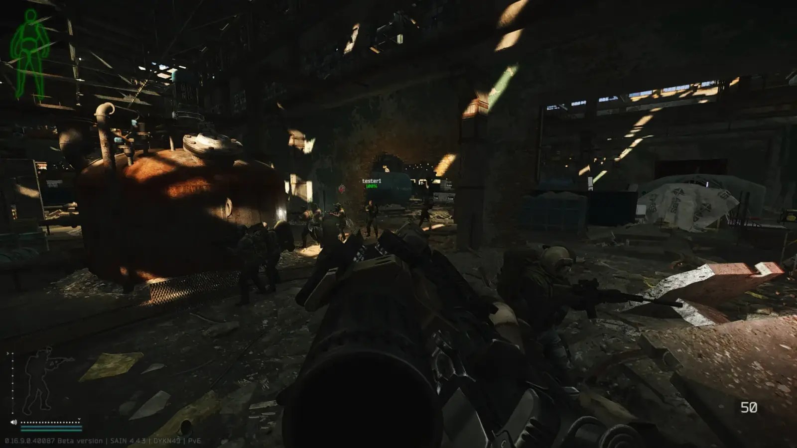
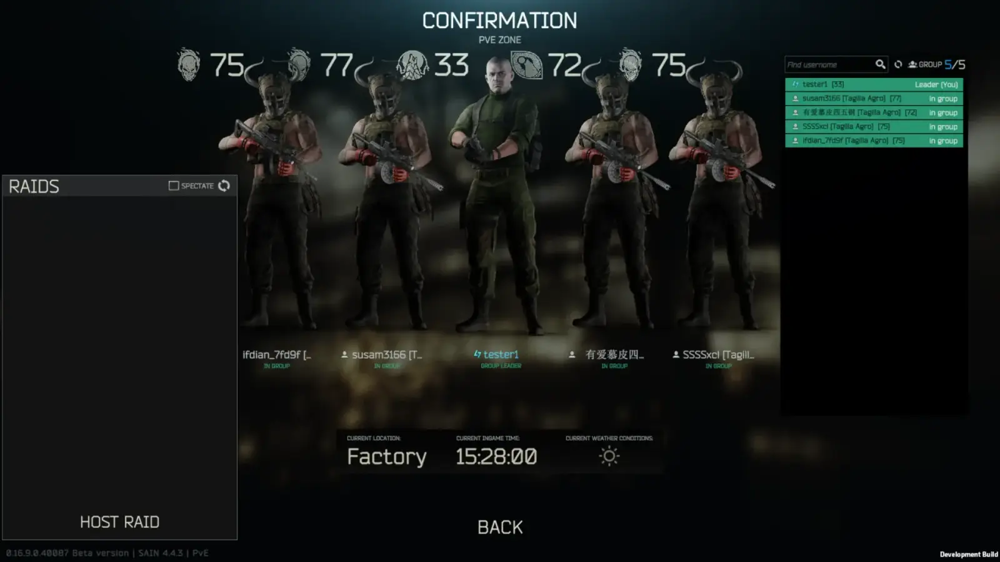
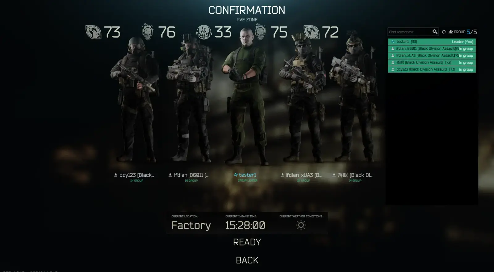
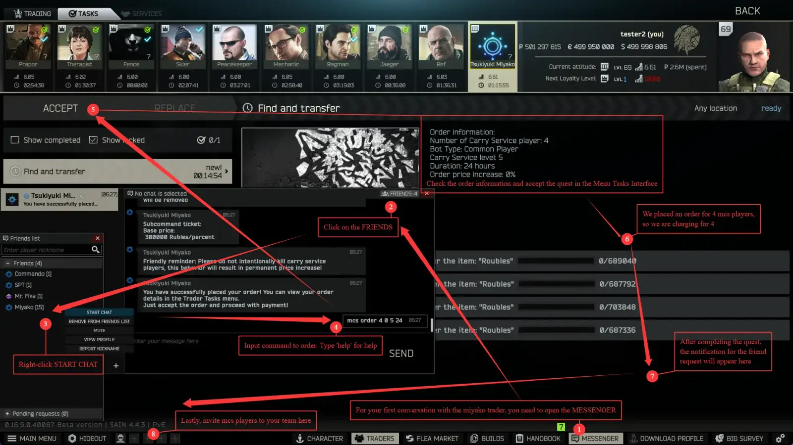
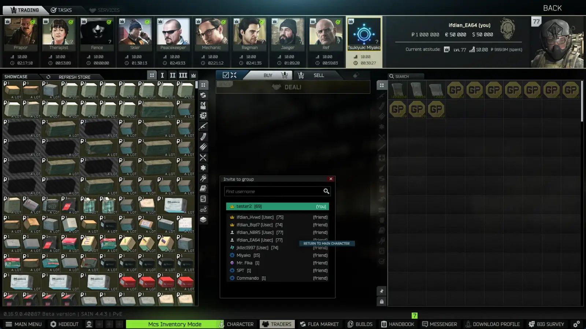

Miyako Carry Service
- Downloads
- 5,525
- Favourites
- 37
- Mod lists
- 16
This mod will check for updates online.
This document will use Mcs as the abbreviation for Miyako Carry Service; you will be referred to as McsLeadPlayer, and the AI teammates generated by Mcs will be referred to as McsBotPlayer.
Supports full customization of McsBotPlayer equipment through Mcs Inventory Mode, supports generating any type of AI as a McsBotPlayer, even AI types provided by other mods, supports McsBotPlayers picking up specified loot, supports commanding McsBotPlayers through the command system, compatible with SAIN, compatible with Fika.

In Fika multiplayer, each player can have their own McsBotPlayer squad.

Allows any type of AI to become your teammate, even Bosses
You can even generate AI types provided by third-party mods such as Black Division Home, UNTAR Go Home!, RUAF Come Home!, as long as your configuration file is correct.

What Can Mcs Offer You?
The answer: the ultimate comfortable service experience.
A Powerful and Flexible Command System
Beyond a handful of basic movement commands, and built upon EFT’s own Action Menu, Mcs injects limitless possibilities into its command system.
This lets you assign a McsBotPlayer to lead you to all kinds of destinations — quest locations, exfil points, transit points, switches, and especially those areas you want to reach but whose location you don’t know. In that case you can simply have them lead the way in front of you; just follow their steps and you’ll arrive at your destination (provided, of course, that the location itself allows AI to go there).
You can even delegate certain actions to them to complete independently in your stead, so you don’t have to handle everything personally. For example, Mcs allows proxy actions under supported quest conditions — at a single command, they can head to a quest location on their own to perform operations such as repairing, visiting quest position, or installing items. You can complete the quest without ever going to the site yourself.
Or perhaps you want to flip a switch that opens an exfil. You can order them to go operate it themselves while you head straight for the exfil; once the switch is turned on, you can simply extract, instead of having to go open the switch yourself first and then move to the exfil to extract as before.
And besides keeping you safe, if you’re in a complex area with enemies potentially lurking around, you can order them to thoroughly search every corner of a specified location.
Make Every Gain Entirely Yours
As a mod that delivers the perfect service experience, your McsBotPlayer should naturally be able to actively scavenge loot according to your settings. You can set blocked item types, a loot value threshold, whether to loot items containing specific keywords, and more. They will also nest looted items to a certain degree, plundering as much of the loot you need as possible. However, in the end these gains still need to be collected by you personally before they can be carried out of the raid.
The Final Piece to Accomplishing Great Deeds
The Formation System
This system lets you configure a 7×7 formation matrix in which you can set your own position and those of your teammates, along with the spacing between them. Now you have a well-trained, powerful squad that maintains its formation at all times. You can also save the current formation as a preset via hotkey and give it a custom name, then quickly apply formation presets through the command system to handle any scenario.
Configurations That Take Effect Independently for Each Player
As is well known, Mcs supports installing the Fika Addon to work in a Fika multiplayer environment. And as we also know, in a Fika multiplayer environment almost all of a raid’s computation is performed on the host. For that reason, we would not want every McsBotPlayer behavior to be dictated solely by the host. Not to worry — Mcs also supports syncing some of the configuration items, so a user acting as the host can have different squads compute using their own respective configurations, including loot scavenging configuration, formation positioning configuration, and more. I guarantee you can get the same experience as when using Mcs in your own local raid.
Installation
- Place the folder located in the downloaded zip into your main SPT folder.
- Mod will be activated by default.

How To Generate McsBotPlayer
Mcs mimics a carry service in the gaming industry. In this process, you need to select the desired service, place an order and pay, and play together with the player who comes to serve you. Therefore, Mcs provides a trader Tsukiyuki Miyako to handle all these actions

If you cannot see the Group Panel, please check whether you have UI Fixes installed, then open Advanced Settings in the Configuration Manager, navigate to Interface -> Show Group Panel, and enable it.
Currently Mcs does not provide indefinite service. When the service period you set expires, McsBotPlayer will automatically delete the friend.
How to Customize McsBotPlayer Equipment
- You need to have a
McsBotPlayerthat has been added as a friend. - Open the
Invite to groupinterface from the bottom left corner of the bottom bar. - Right-click on the
McsBotPlayerto bring up the right-click menu, selectOPEN INVENTORY. - At this point, you will enter Mcs Inventory Mode.
- In Mcs Inventory Mode, you can customize the
McsBotPlayer’s equipment through operations exactly the same as normal gameplay. - When entering Mcs Inventory Mode, the Miyako trader will provide all items for purchase at 1 ruble
- To return to the main character, there are two ways: one is to right-click on the
McsBotPlayerthrough theInvite to groupinterface again and selectRETURN TO MAIN CHARACTER; the other is to directly click the green Mcs Inventory Mode button on the bottom bar, which can also return to the main character.

1. Mcs Inventory Mode modifies the McsBotPlayer‘s equipment only in PMC mode. As is well known, PMC mode and SCAV mode are two different characters. According to game settings, you cannot control the SCAV character’s equipment, so Mcs will also maintain this setting.
2. The McsBotPlayer’s friend slot will become unavailable upon expiration. You may choose to settle or renew the order. Only upon successful settlement will all data of the expired McsBotPlayer be permanently deleted, whereas renewing will issue a new order of the same duration; once the renewal task is completed, the service expiration time will be extended.
How to Renew and Settle
- Likewise, open the
Invite to groupinterface at the bottom-left of the bottom bar. - Likewise, right-click on the
McsBotPlayerto bring up the right-click menu, selectRENEW ORDER. - A new quest of the same duration will then be issued; completing it finishes the renewal.
- For an already-expired
McsBotPlayer, selectingSETTLE ORDERwill permanently delete all data of everyMcsBotPlayerunder that order. - The data of an expired
McsBotPlayeris retained indefinitely until you settle it. You can renew anyMcsBotPlayerat any time to make an expiredMcsBotPlayeravailable again, or to extend the expiration time of aMcsBotPlayerthat has not yet expired.
How to Get Loot Picked Up by McsBotPlayers in Raid
When a McsBotPlayer picks up target loot, to get items from the McsBotPlayer besides looting the body after the McsBotPlayer dies, you can also use the OPEN INVENTORY command on a single McsBotPlayer through the Mcs command menu to remotely open the McsBotPlayer’s backpack while the McsBotPlayer is still alive, or use the DROP TARGET LOOT command to have them drop the items they have currently picked up during the raid right in front of you.
According to game settings, McsBotPlayer mimics a real player, so after they pick up loot, if you don’t personally take it, everything will not belong to you after the raid ends.
If you want it, then you’ll have to take it, as you have already known.
How to Customize McsBotPlayer Types
- Start the server once first, and
spawntype.jsonwill be generated underMiyakoCarryServiceServer/configs. - If you don’t understand the following content, it’s recommended not to mess around with it yourself. Incorrect modifications will cause errors. If you really want to change it, read on. You can also leave it to AI to do it. If it’s still changed incorrectly, just delete
spawntype.jsonand restart the server, and a new file will be generated again. - First, you need to know the JSON format rules. It’s best to use an editor like VS Code that can check JSON format.
- Then you need to know the
WildSpawnTypenames of AI provided by third-party mods or built-in to the original game. - Take Black Division Home as an example. It provides a Black Division WildSpawnType:
blackDivAssault. - Now you need to add another type in the correct format in
spawntype.json.
{
"WildSpawnType": "sectantOni",
"IsBoss": true,
"DisplayName": "Oni"
},
// The above is the EFT native WildSpawnType. When adding new types later,
// you need to bring `,` after `}`.
{
"WildSpawnType": "blackDivAssault",
// Write the WildSpawnType name here.
"IsBoss": false,
// Whether to serve as a Boss type.
// When using the help command, a `[Boss]` prefix will be added for this type.
"DisplayName": "Black Division Assault"
// Display name. When using the help command,
// only this name will be displayed, not the WildSpawnType name.
}
// The last `}` should not have `,`.
- After ensuring the JSON format is correct and the data is filled in correctly, restart the server. At this time, use the help command in the MESSENGER interface with the Miyako trader, and all types will be displayed in the list of available types.
- If an exception occurs when generating the customized type, you will receive an error reminder in server log and it will change to generate the default pmc type
McsBotPlayer. At this time, you need to check whether the customized type you filled in is incorrect.
- BalanceRestriction
Balance restriction. Defaults to false. When enabled, the open McsBotPlayer inventory command becomes unavailable, and all items a McsBotPlayer brings into the raid are given the Curse of Vanishing enchantment — when the McsBotPlayer dies, the items they brought in will immediately vanish no matter where they are.
- CheckUpdate
Whether to check for version updates online. Defaults to true.
- CheckIfdian
Whether to check for sponsor list updates. Defaults to true.
- TicketPricePerPercent
Ticket price per percent. Used to price the fine paid when applying for a ticket to remove the price-increase punishment, in roubles per percent. Defaults to 300000 roubles per percent.
- PunishmentMultiMax
Maximum price-increase punishment. Expressed as a multiplier, defaults to 1 (i.e. 100%). For example, a value of 5 sets the maximum price-increase punishment to 500%.
- OrderPendingPaymentTime
Order pending payment time. The expiration time of the action task provided by the Miyako trader when ordering a McsBotPlayer or issuing a ticket. In seconds, defaults to 900 seconds (i.e. 15 minutes).
- CompensationPrice
Compensation price. Paid when a McsBotPlayer accidentally kills the McsLeadPlayer. In roubles, defaults to 300000 roubles.
- CarryServiceLevelPrice
Carry service level base price. There are 5 levels in total, in roubles, with an upper and lower bound set for each level.
Basic
- Enable Looting
If McsBotPlayer is not currently in combat, whether it will attempt to loot items.
- Price Threshold
Loot below this price will be ignored.
- Loot Name Keyword
Keywords are substrings contained in an item’s full or abbreviated name. Multiple keywords can be separated using “||”, “,” or “，”.
- Loot Keyword Items
Whether McsBotPlayer will attempt to loot keyword items
- Blocked Item Types
Supports select all, deselect all: Ammo, Barter, Info, Container, Food, Backpack, Goggles, Pocket, Tactical Vest, Armor, Grenade, Headphone, Keys, Knife, Magazine, Meds, Mod, Special, Weapon, Other
- Enable Keep Formation
Whether to determine McsBotPlayer positions based on formation matrix configuration
- Formation Matrix
Used to configure the position of each McsBotPlayer. “★” represents your position. The top of “★” is your look direction
-
Formation Spacing
-
Formation Sequential Fill
When enabled, if a McsBotPlayer dies in formation, the empty position is filled by the next squad member in brevity code order
- Save Formation Preset Hotkey
When Fika is installed, adjusting settings in raid will automatically sync to the host, but this requires you to have the MiyakoCarryServiceFika addon installed first.
Command
MemberCommand
- Report Enemy Position
If McsBotPlayer is currently in combat, command McsBotPlayer to report known enemy positions.
- Report Self Status
Command McsBotPlayer to report own health and supply status.
- On Your Own
Command McsBotPlayer to act independently.
- Regroup
Command McsBotPlayer to stop all actions and regroup.
- Follow Me
Command McsBotPlayer to follow the McsLeadPlayer. In this state, McsBotPlayer will not proactively attack enemies or loot.
- Exclude / Takeover
Exclude command will prevent McsBotPlayer from receiving team commands; Take Over command will restore team command control over McsBotPlayer.
- Go To
If McsBotPlayer is not currently in combat, command McsBotPlayer to go to a specified location.
- Hold Position
If McsBotPlayer is not currently in combat, command McsBotPlayer to stay in place.
- Force Teleport
Clear McsBotPlayer’s aggro and attempt to teleport them to current location.
- Open Inventory
Remotely open McsBotPlayer’s inventory remotely, used to transfer loot they have picked up.
- Change Aiming Body Part Type
Command McsBotPlayer to change preferred combat aiming body part.
- Escort
-
- Quest Escort
-
- Exfil Escort
-
- Transit Escort
-
- Switch Escort
-
- Stationary Weapon Escort
-
- BTR Escort
-
- Airdrop Escort
If McsBotPlayer is not currently in combat, command McsBotPlayer to escort to the designated location.
- Proxy Action
-
- Quest Proxy Action
-
- Door Proxy Action
-
- Loot Proxy Action
-
- Switch Proxy Action
If McsBotPlayer is not currently in combat, command McsBotPlayer proxy to execute action.
- Drop Target Loot
If McsBotPlayer is not currently in combat, command McsBotPlayer to drop the target loot picked up during the raid.
- Clear Area
If McsBotPlayer is not currently in combat, command McsBotPlayer to clear the surrounding area of a specified location.
TeamCommand
- Team Report Enemy Position
If there are McsBotPlayers in the team currently in combat, command McsBotPlayers to report known enemy positions.
- Team Report Self Status
Command McsBotPlayers to report own health and supply status.
- Team On Your Own
Command McsBotPlayers to act independently.
- Team Regroup
Command all McsBotPlayers to stop all actions and regroup.
- Team Follow Me
Command all McsBotPlayers to follow the McsLeadPlayer. In this state, they will not proactively attack enemies or loot.
- Team Go To
If there are McsBotPlayers in the team not currently in combat, command McsBotPlayers to go to a specified location.
- Team Hold Position
If there are McsBotPlayers in the team not currently in combat, command McsBotPlayers to stay in place.
- Team Force Teleport
Clear aggro for all team McsBotPlayers and attempt to teleport all of them to current location.
- Team Change Aiming Body Part Type
Command McsBotPlayers to change preferred combat aiming body part.
- Team Escort
-
- Team Quest Escort
-
- Team Exfil Escort
-
- Team Transit Escort
-
- Team Switch Escort
-
- Team Stationary Weapon Escort
-
- Team BTR Escort
-
- Team Airdrop Escort
If there are McsBotPlayers in the team not currently in combat, command McsBotPlayers to escort to the designated location.
- Team Drop Target Loot
If there are McsBotPlayers in the team not currently in combat, command McsBotPlayers to drop the target loot picked up during the raid.
- Team Clear Area
If there are McsBotPlayers in the team not currently in combat, command McsBotPlayers to clear the surrounding area of a specified location.
- Change Formation
Apply saved formation preset immediately.
The command system also works normally during Fika multiplayer, but this requires you to have the MiyakoCarryServiceFika addon installed first.
Player
- Teammate Highlight
Whether to highlight all McsBotPlayer characters in raid.
-
Teammate Highlight Hotkey
-
Teammate Highlight Color
-
Enable Mcs Subtitles
Whether to use subtitles to display McsBotPlayer reports.
- Show Brevity Code
Use brevity codes to replace original nicknames for display.
- English (AI Translate)
- 简体中文
- русский язык (Contributed by NotDifficult)
EFT Native
- marksman
- assault
- bossTest
- bossBully (Mcs default support)
- followerTest
- followerBully
- bossKilla (Mcs default support)
- bossKojaniy (Mcs default support)
- followerKojaniy
- pmcBot (Mcs default support)
- cursedAssault
- bossGluhar (Mcs default support)
- followerGluharAssault
- followerGluharSecurity
- followerGluharScout
- followerGluharSnipe
- followerSanitar
- bossSanitar (Mcs default support)
- test
- assaultGroup
- sectantWarrior
- sectantPriest
- bossTagilla (Mcs default support)
- followerTagilla
- exUsec (Mcs default support)
- gifter
- bossKnight (Mcs default support)
- followerBigPipe (Mcs default support)
- followerBirdEye (Mcs default support)
- bossZryachiy (Mcs default support)
- followerZryachiy
- bossBoar (Mcs default support)
- followerBoar
- arenaFighter
- arenaFighterEvent
- bossBoarSniper
- crazyAssaultEvent
- peacefullZryachiyEvent
- sectactPriestEvent
- ravangeZryachiyEvent
- followerBoarClose1
- followerBoarClose2
- bossKolontay (Mcs default support)
- followerKolontayAssault
- followerKolontaySecurity
- shooterBTR
- bossPartisan (Mcs default support)
- spiritWinter
- spiritSpring
- peacemaker
- pmcBEAR (Mcs default support)
- pmcUSEC (Mcs default support)
- skier
- sectantPredvestnik (Mcs default support)
- sectantPrizrak (Mcs default support)
- sectantOni (Mcs default support)
- infectedAssault (Mcs default support)
- infectedPmc (Mcs default support)
- infectedCivil
- infectedLaborant
- infectedTagilla (Mcs default support)
- bossTagillaAgro (Mcs default support)
- bossKillaAgro (Mcs default support)
- tagillaHelperAgro
Black Division Home
- blackDivLead
- blackDivAssault
- blackDivBreacher
- blackDivSupport
UNTAR Go Home!
- followeruntar
- bossuntarlead
- followeruntarmarksman
- bossuntaroffice
RUAF Come Home!
- ruafRifleman
- ruafRiflemanSenior
- ruafAutorifleman
- ruafGrenadier
- ruafMarksman
- ruafMachinegunner
Version
1.0.14
Miyako is my waifu.
McsBotPlayercan now use stationary weapons- Added commands: Escort to BTR, Escort to Stationary Weapon, Escort to Airdrop
- Adjusted the meaning of the “Regroup” command, and added a “Follow Me” command to distinguish between them
- Added commands: Exclude / Take Over
- Improved the command menu’s interaction logic
- Enriched
McsBotPlayer’s dialogue content - Added a legitimacy check for
McsBotPlayerprofile as well - Fixed some other issues
Dependencies
Version
1.0.13
Miyako is my waifu.
McsBotPlayercan now ride the BTRMcsBotPlayerwill sync your pose when you show an intent to sneak- Improved compatibility with other mods
- Fixed more than 7 other issues
Dependencies
Version
1.0.12
Miyako is my waifu.
⚠ Starting from version 1.0.10.0, the mod itself and the Fika compatibility plugin will be released separately. The mod’s archive will no longer bundle the Fika compatibility plugin — please download it yourself if needed ⚠ -> here
- Added formation system
- Added command: Change Formation
- Tuned McsBotPlayer behavior, including healing, pathfinding, and combat
- Fixed some other issues
Dependencies
Version
1.0.11
Miyako is my waifu.
⚠ Starting from version 1.0.10.0, the mod itself and the Fika compatibility plugin will be released separately. The mod’s archive will no longer bundle the Fika compatibility plugin — please download it yourself if needed ⚠ -> here
- Added Settle and Renew options, and adjusted the order settlement mechanism
- Added command: Clear Area
McsBotPlayerwill no longer disarm tripwires planted by real players- Improved the command menu so that it only closes when you actively close it
- Fixed more than 9 other issues
Dependencies
Version
1.0.10
Miyako is my waifu.
⚠ Starting from version 1.0.10.0, the mod itself and the Fika compatibility plugin will be released separately. The mod’s archive will no longer bundle the Fika compatibility plugin — please download it yourself if needed ⚠ -> here
- Added command: Report Self Status
- Improved the command menu: added an option to return to the previous menu
- Extensive code rewrites, extensive bug fixes, and extensive code optimizations
Dependencies
Version
1.0.9+2
Miyako is my waifu.
⚠ This version may result in a situation where
McsBotPlayeris completely uncontrollable. Please proceed with caution when updating or wait for the new version. ⚠
- Added command: Drop Target Loot
- Added command: Proxy Action
-
- Command an
McsBotPlayerto go to a quest location alone and proxy-complete certain types of quests
- Command an
-
- Command an
McsBotPlayerto go to a switch location alone and proxy-operate the switch
- Command an
-
- Added a proxy open option for locked doors
-
- Added a proxy take option for loose loot
- Optimized
McsBotPlayerhealing logic, adjusted kill experience sharing logic - Fixed the “Change Aiming Body Part” command not taking effect correctly in multiplayer
- Various fixes and optimizations
Dependencies
Version
1.0.8
Miyako is my waifu.
- Added “Escort to Switch”
- Added command: Change aiming body part
- McsBotPlayer will now avoid various danger zones
- Various fixes and optimizations
Dependencies
Version
1.0.7
Miyako is my waifu.
- Added multiple new configuration options
-
BalanceRestriction: When enabled, it disables the open-inventory command and removes nearly all items theMcsBotPlayerbrought into the raid upon their death (equivalent to the Minecraft enchantment: Curse of Vanishing). Disabled by default
-
TicketPricePerPercent: Ticket price per percent. Defaults to 300000 roubles per percent
-
PunishmentMultiMax: Maximum price-increase punishment. Defaults to 1 (i.e. 100%)
-
OrderPendingPaymentTime: Pending payment time for orders/tickets, in seconds. Defaults to 900 (i.e. 900 seconds / 15 minutes)
-
CompensationPrice: Compensation price for anMcsBotPlayerkilling anMcsLeadPlayerby mistake. Defaults to 300000 (i.e. 300000 roubles per accidental kill)
-
CarryServiceLevelPrice: Carry service level price range, in roubles
- Various fixes and optimizations
Dependencies
Version
1.0.6
Miyako is my waifu.
- Added
McsBotPlayerkill XP and partial quest progress sharing. - Optimized
McsBotPlayerhealing logic. - Fixed an issue where penalty tickets could cause exceptions in non-Chinese server environments, and fixed an issue where
McsBotPlayerdid not extract properly. - Implemented saved equipment presets for
McsBotPlayer. - Increased
McsBotPlayerfunds, which can be used to one-click purchase preset gear sets.
Dependencies
Version
1.0.5
Miyako is my waifu.
- Miyako trader chat now additionally notifies about new version updates
- Optimized Command Menu layout when displaying a large number of options
- Improved compatibility with third-party mods; fixed an issue where the Escort command did not work when SAIN was installed
- Improved Escort command destination position accuracy; fixed several bugs with the Escort command
- Added scroll view display for the player info list
- Added Refresh Friend List option